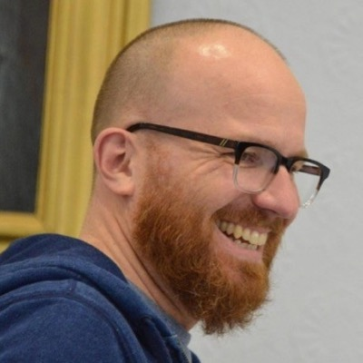

Olaf Alders
Dad, hacker, guitar player and swimmer. Olaf is a founder of the MetaCPAN project. Olaf deals with CPAN publishing infrastructure, auditing CVE findings, maintainer outreach, patches development and serves as the grant manager. He is also in charge of fundraising for The Perl and Raku Foundation.